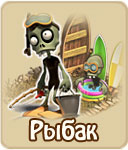

Получено: файл; исходный URL. Первая иллюстрация карточки каталога; подписи изображений источника могут содержать ошибки. Авторство и идентичность при замене домена не подтверждены. Страница: источник.
Рыбак за монеты
браузерная версия; платформа и дата редакции не установлены- Тип
- Зомби
- Версия и дата
- браузерная версия; платформа и дата редакции не установлены
Данные по источнику · браузерная версия; платформа не указана · дата редакции не установлена
Предварительно: Содержимое списка: изображения и колонки могут терять смысл при извлечении текста; отдельная страница и дата не проверены. Подписи alt иногда ошибочны.. Требуется сверка.
- Текст карточки из каталога
- Описание зомби: Особенности: Виды добываемых ресурсов: Стоимость: 2 500 000 Требуется мозгов: 1 Время работы: 90 минут Доступен: с 70 уровня (или открыть за 70 Зб) Рыбак добывает много металлолома (действительно много) и редкие коллекции. Металлолом Адская коллекция Школьная коллекция Подземельная коллекция Любовная коллекция Райская коллекция Коллекция рыбака Гипер-коллекция Коллекция Майа Секретная коллекция Морская Коллекция Пляжная коллекция Зимняя коллекция Президентская коллекция

Данные по источнику · историческая браузерная игра, платформа не уточнена · 01.06.2012 — дата публикации; дата редакции неизвестна
Предварительно: Фанатский источник, вероятности отсутствуют; дата публикации не гарантирует дату всех данных. Независимость от zombi-ferma.ru не установлена.. Требуется сверка.
- Параметры
- 70 уровень, покупка 2 500 000 монет, продажа 250 000 монет; мозги и время в таблице не указаны.
- Действия и указанная добыча
- Опыт, монеты, металлолом; коллекции Морская, Пляжная, Президентская, Майя, Секретная, Гипер, Зимняя, Подземельная, Любовная, Адская, Райская, Школьная, Рыбака и Пиратская. Добыча в ведре.
- Копание у друзей
- Под рыбаком у друзей: Байкерская, Ручная, Обувная, опыт, монеты. Одна пиктограмма подписана Байкерской, но ссылка ведёт на коллекцию Знаков.


Связанные сущности
нет проверенных связей — требуется сверка.